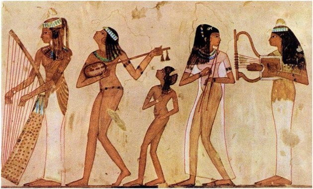
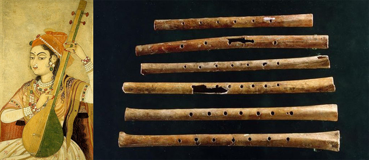
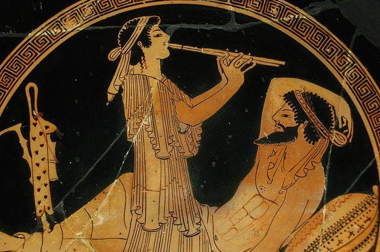
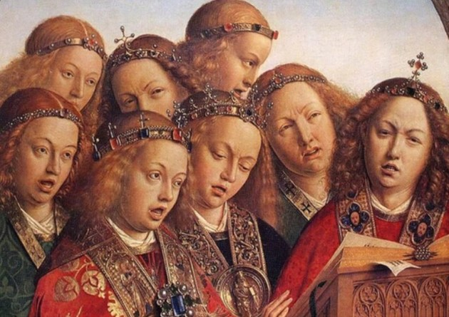

A História da Música:
História da Música é estudo das origens e evolução da música ao longo do tempo. Como disciplina histórica insere-se na história da arte e no estudo da evolução cultural dos povos. Como disciplina musical, normalmente é uma divisão da musicologia e da teoria musical. Seu estudo, como qualquer área da história, é trabalho dos historiadores, porém também é frequentemente realizado pelos musicólogos.
Em 1957 Marius Schneider escreveu: “Até poucas décadas atrás o termo ‘história da música’ significava meramente história da música erudita européia. Foi apenas gradualmente que o escopo da música foi estendido para incluir a fundação indispensável da música não européia e finalmente da música pré-histórica.”
Há, portanto, tantas histórias da música quanto há culturas e espaços no mundo e todas as suas vertentes têm desdobramentos e subdivisões. Podemos assim falar da história da música do ocidente, mas também podemos desdobrá-la na história da música erudita do ocidente, história da música popular do ocidente, história da música do Brasil, história do samba, e assim sucessivamente.
Uma das razões do conceito difundido de que história da música refere-se apenas à música ocidental é a grande quantidade de obras existentes que tratam apenas desta vertente e que predominaram por muitos séculos. Apenas após o surgimento da etnomusicologia (uma área da etnologia), foi que as origens da música não européia passaram a ser mais bem documentadas.
Nos estudos da música primitiva que tentam relacionar a música às culturas que as envolvem, há duas abordagens prevalecentes: a Kulturkreis da “Escola de Berlim” e a tradição norte americana da área cultural. Entre os adeptos da Kulturkreis está Curt Sachs, que analisou a distribuição de instrumentos culturais de acordo com os círculos culturais estudados por Gräbner, Schmidt, Isadora e Preuss, entre outros, e descobriu que as distribuições coincidiam e estavam correlacionadas. De acordo com esta teoria, todas as culturas passam pelos mesmos estágios e as diferenças culturais indicam a idade e velocidade de desenvolvimento de uma dada cultura.
A teoria da área cultural, por outro lado, analisa a música de acordo com as regiões nas quais as pessoas compartilham a mesma cultura, sem atribuir a essas áreas um significado ou valor histórico (por exemplo, todos os Inuit tradicionais possuíam um caiaque, um traço comum que define a área cultural Inuit). Em cada uma das teorias, as regiões definidas necessariamente se interceptam, com pessoas que compartilham partes de mais de uma cultura, permitindo a definição dos centros culturais pela análise de seus limites. (Nettl 1956, p.93-94)
A etnologia analisa e documenta as manifestações culturais oralmente e as correlacionam às suas regiões para determinar a história de cada cultura. Isso inclui todas as manifestações artísticas, inclusive a música.
A música, no que concerne ao repertório, pode ser classificada em gêneros e estilos, a partir máxime dos elementos musicológicos específicos considerados (a saber, por exemplo: instrumentação e tessitura vocal; forma e estrutura; fórmula de compasso; ritmo; andamento; harmonia e contraponto; etc.), isso quando não se consideram, mais além, a forma ou o conteúdo do texto aplicado (letra ou libretto, no caso específico da música vocal), a funcionalidade (eis, por exemplo, o caso tanto das trilhas sonoras para produções cinematográficas ou televisivas quanto dos jingles e vinhetas publicitárias para veículos de radiodifusão) ou mesmo a data histórica em que a peça musical foi escrita (concernente à escola musical).
Agora vamos visualizar algumas diferentes civilizações:
A música no EgitoS
No Egito Antigo, ainda no século 4.000 a.C., a música era muito presente, configurando um importante elemento religioso. Os egípcios consideravam que essa forma de arte era uma invenção do deus Thoth e que outro deus, Osíris, a utilizou como uma maneira para civilizar o mundo.
A música era empregada de forma a complementar os rituais sagrados em torno da agricultura, que era farta na região e os instrumentos utilizados eram harpas, flautas, instrumentos de percussão e cítara - que é um instrumento de cordas derivado da lira.
Música na MesopotâmiaS

Na região da Mesopotâmia, localizada entre os rios Tigre e Eufrates, habitavam os povos sumérios, assírios e babilônios. Foram encontradas harpas de 3 a 20 cordas na região onde os sumérios viviam e estima-se que sejam objetos com mais de 5 mil anos. Também foram descobertas cítaras que pertenceram ao povo assírio.
Música na China e na ÍndiaS
Na Ásia - em torno de 3.000 a.C. - a atividade musical prosperou na Índia e China. Nessas regiões, ela também estava fortemente relacionada à espiritualidade.
O instrumento mais popular entre os chineses era a cítara e o sistema musical utilizado era a escala de cinco tons - pentatônica.
Já na Índia, em 800 a.C., o método musical era o de "ragas", que não utilizava notas musicais e era composto de tons e semitons.
Música na Grécia e em RomaS
Podemos observar que a cultura musical na Grécia Antiga funcionava como uma espécie de elo entre os homens e as divindades. Tanto que a palavra "música" provém do termo grego mousikē, que significa "a arte das musas". As musas eram as deusas que guiavam e inspiravam as ciências e as artes.
É importante ressaltar que Pitágoras, grande filósofo grego, foi o responsável por estabelecer relações entre a matemática e a música, descobrindo as notas e os intervalos musicais.
Sabe-se que na Roma Antiga, muitas manifestações artísticas foram heranças da cultura grega, como a pintura e a escultura. Supõe-se, dessa forma, que o mesmo ocorreu com a música. Entretanto, diferente dos gregos, os romanos usufruíam dessa arte de maneira mais ampla e cotidiana.
Música na Idade MédiaS
Durante a Idade Média a Igreja Católica esteve bastante presente na sociedade europeia e ditava a conduta moral, social, política e artística.
Naquela época, a música teve uma presença marcante nos cultos católicos. O Papa Gregório I - século VI - classificou e compilou as regras para o canto que deveria ser entoado nas cerimônias da Igreja e intitulou-o como canto gregoriano.
Outra expressão musical do período que merece destaque são as chamadas Cantigas de Santa Maria, que agregam 427 composições produzidas em galego-português e divididas em quatro manuscritos.
Uma importante compositora medieval foi Hidelgard Von Bingen, também conhecida como Sibila do Reino.